Эпическое приключение в Тейвате
Вас ждёт захватывающее однопользовательское приключение, где вы станете гостем из другого мира в поисках потерянного родного человека. Разгадайте тайны Тейвата и самого себя.
Инадзума
Одно из семи королевств Тейвата. Это страна, которая поклоняется Электро Архонту, Райдэн Эи, и лидеру руководящей страной группировки, Бакуфу Инадзумы. Согласно внутриигровым данным, Инадзума находится на расстоянии 4 километров к юго-востоку от гавани Ли Юэ.

Ли Юэ
Одно из семи королевств Тейвата. Это страна поклоняющаяся Гео Архонту Мораксу или же Властелину Камня, как его называют сами жители Ли Юэ. Богатый портовый город, расположенный в восточной части континента Тейват.
Мондштадт
одно из семи королевств Тейвата и первое, куда Путешественник прибывает в поисках своего потерянного близнеца. Это город-государство, который поклоняется Анемо Архонту Барбатосу. Город свободы, расположенный в северо-восточной части Тейвата.

Встречайте множество персонажей
Персонажи в Genshin Impact могут быть получены в первую очередь в гача-системе игры, называемой Молитвы, при помощи Переплетающиеся судьбы Переплетающихся судеб или Судьбоносные встречи Судьбоносных встреч. На данный момент доступно около 40 разных игровых персонажей!
| Иконка | Имя | Редкость | Элемент | Оружия | Регион |
|---|---|---|---|---|---|
| 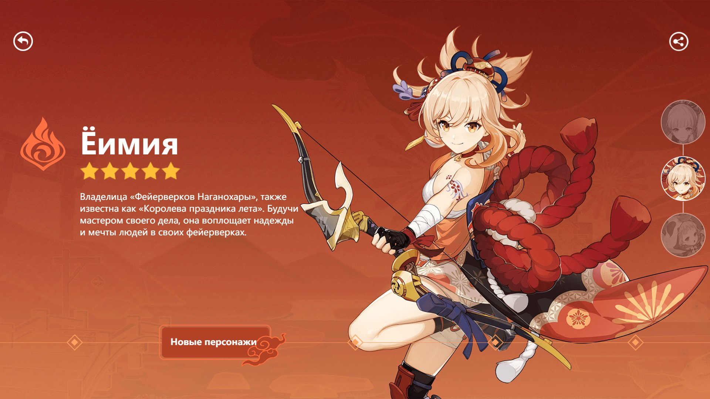 | Еимия | 🌟🌟🌟🌟🌟 | Пиро | Лук | Инадзума |
| 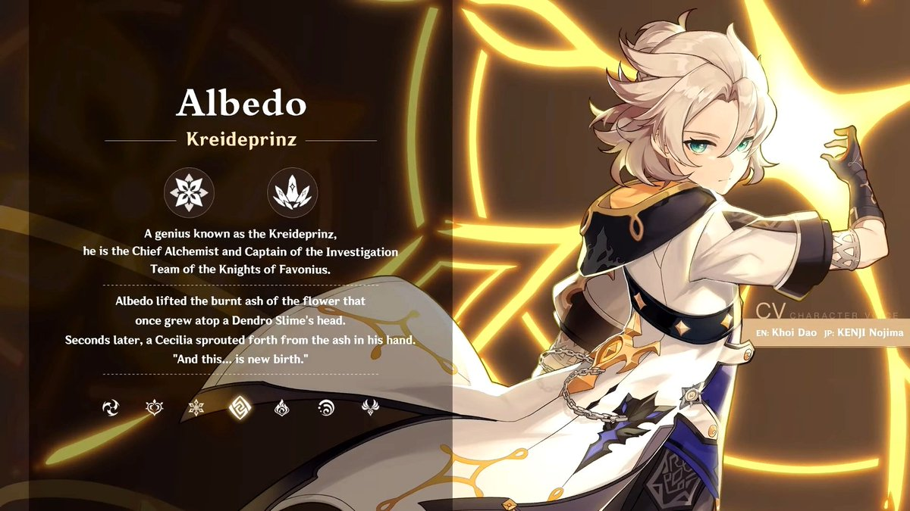 | Альбедо | 🌟🌟🌟🌟🌟 | Гео | Меч | Мондштадт |
| 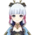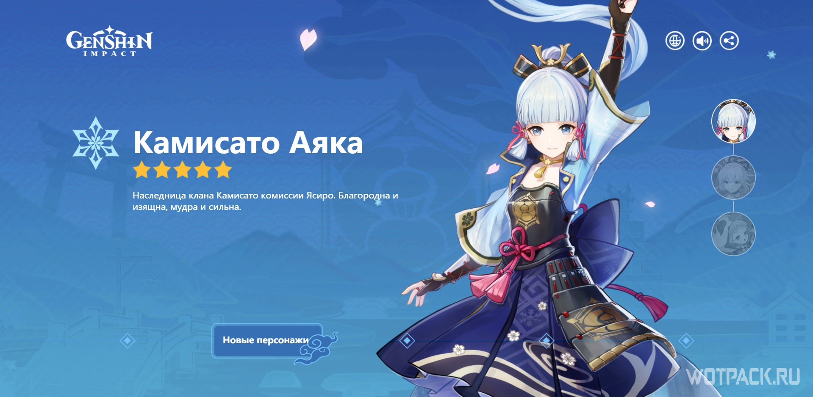 | Аяка | 🌟🌟🌟🌟🌟 | Крио | Меч | Инадзума |
| 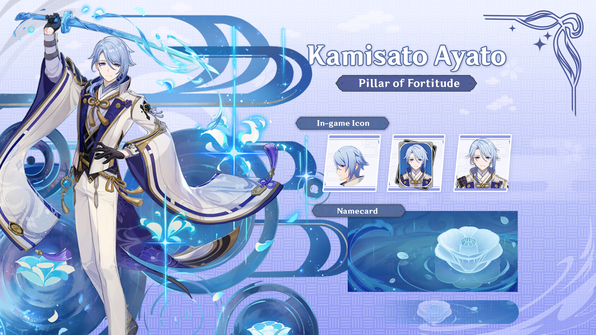 | Аято | 🌟🌟🌟🌟🌟 | Гидро | Меч | Инадзума |
| 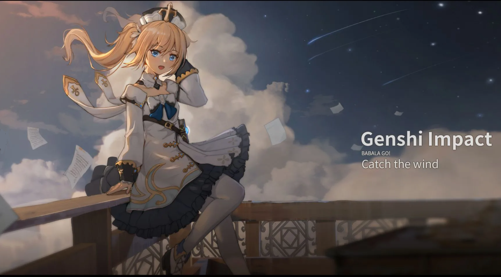 | Барбара | 🌟🌟🌟🌟 | Гидро |  Катализатор Катализатор | Мондштадт |
| 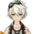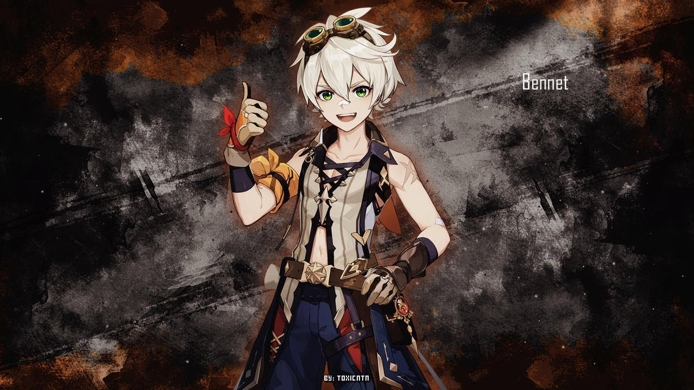 | Беннет | 🌟🌟🌟🌟 | Пиро | Меч | Мондштадт |
| 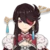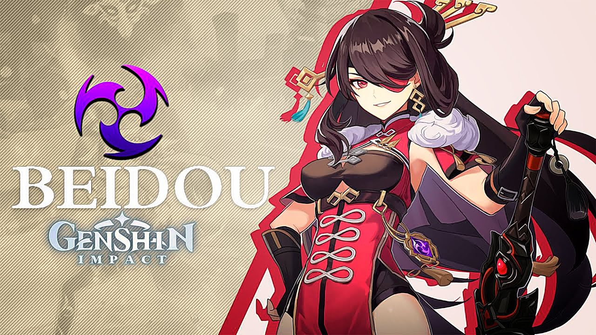 | Бей Доу | 🌟🌟🌟🌟 | Электро | Двуручный Меч | Ли Юэ |
| 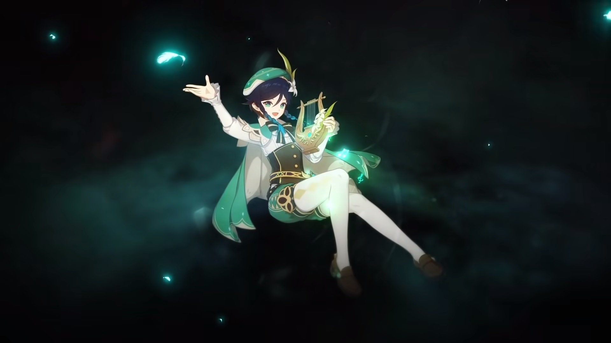 | Венти | 🌟🌟🌟🌟 | Анемо | Лук | Мондштадт |
 | Гань Юй | 🌟🌟🌟🌟 | Крио | Лук | Ли Юэ |